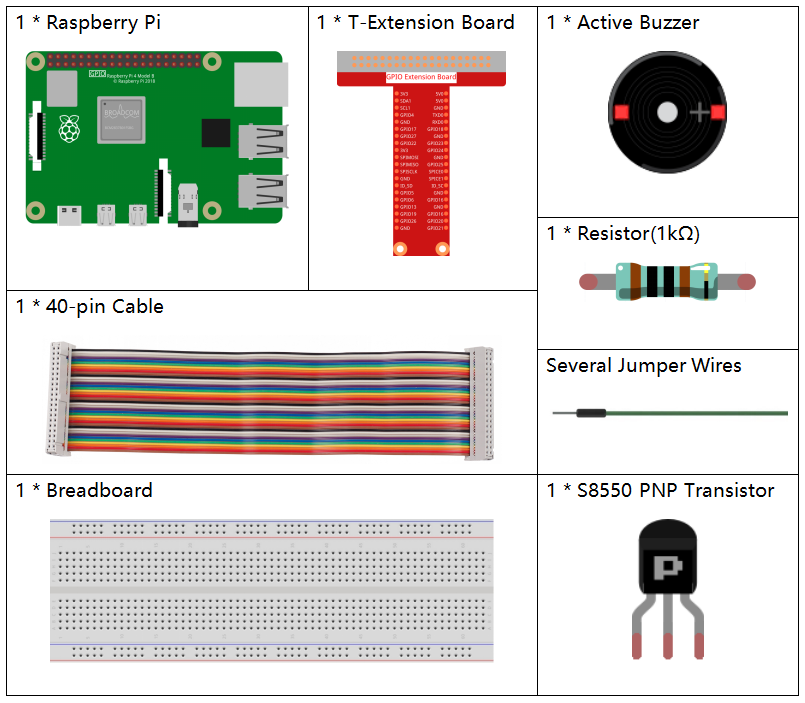
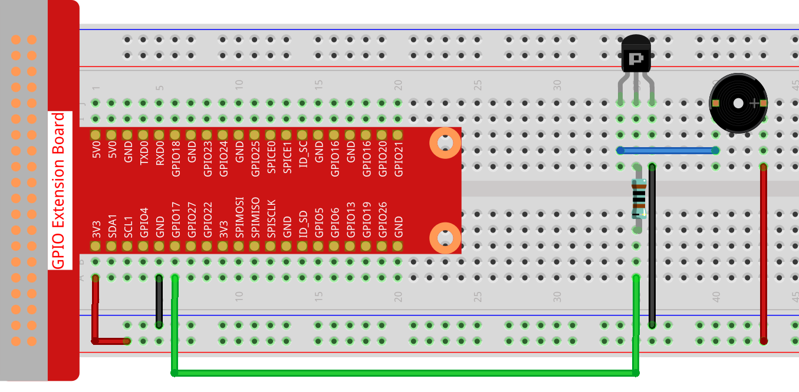

Nota
¡Hola! Bienvenido a la Comunidad de Entusiastas de SunFounder para Raspberry Pi, Arduino y ESP32 en Facebook. Sumérgete en el apasionante mundo de Raspberry Pi, Arduino y ESP32 junto a otros entusiastas.
¿Por qué unirte?
Soporte Experto: Resuelve problemas postventa y desafíos técnicos con la ayuda de nuestra comunidad y equipo.
Aprende y Comparte: Intercambia consejos y tutoriales para mejorar tus habilidades.
Avances Exclusivos: Obtén acceso anticipado a nuevos anuncios de productos y adelantos exclusivos.
Descuentos Especiales: Disfruta de descuentos exclusivos en nuestros productos más recientes.
Promociones Festivas y Sorteos: Participa en sorteos y promociones especiales de temporada.
👉 ¿Listo para explorar y crear con nosotros? Haz clic en [Aquí] y únete hoy mismo.
Buzzer Activo
Introducción
En este proyecto, aprenderemos cómo activar un zumbador activo para que emita sonidos usando un transistor PNP.
Componentes
Diagrama del Circuito
En este experimento, se utiliza un zumbador activo, un transistor PNP y una resistencia de 1k entre la base del transistor y el GPIO para proteger el transistor. Cuando el GPIO17 de Raspberry Pi está programado para suministrar un nivel bajo (0V), el transistor entrará en conducción debido a la saturación de corriente, y el zumbador emitirá un sonido. En cambio, cuando el nivel es alto, el transistor se cortará y el zumbador no sonará.

Procedimiento Experimental
Paso 1: Construye el circuito. (El zumbador activo tiene una etiqueta blanca en la superficie y un respaldo negro.)
Paso 2: Ve a la carpeta del código.
cd ~/davinci-kit-for-raspberry-pi/nodejs/
Paso 3: Ejecuta el código.
sudo node active_buzzer.js
El código se ejecuta, y el zumbador emite sonidos.
Código
const Gpio = require('pigpio').Gpio;
const active = new Gpio(17,{mode: Gpio.OUTPUT});
setInterval(() => {
active.digitalWrite(!active.digitalRead());
}, 500);
process.on('SIGINT',function(){
active.digitalWrite(1);
process.exit();
});
Explicación del Código
const Gpio = require('pigpio').Gpio;
const active = new Gpio(17,{mode: Gpio.OUTPUT});
Importa el módulo pigpio e instancia un objeto active para controlar el puerto IO Gpio17, configurado en modo de salida.
setInterval(() => {
active.digitalWrite(!active.digitalRead());
}, 500);
El zumbador activo es similar al LED en su uso y puede controlarse con digitalWrite().
La función digitalRead() se usa para leer el nivel actual del pin. Aquí hacemos que el zumbador cambie su estado cada 500 ms.
process.on('SIGINT', function() {
/* DO SOME STUFF HERE */
process.exit()
})
Maneja Ctrl+C para detener el zumbador al salir del programa.